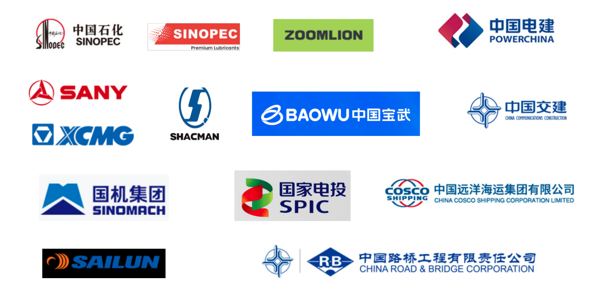
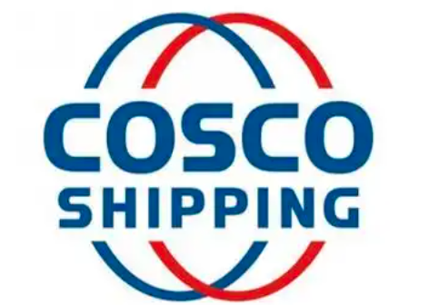
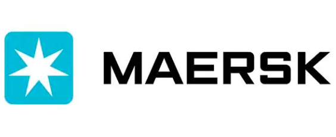
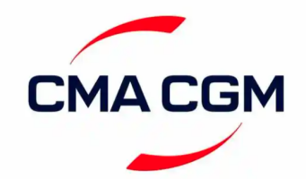
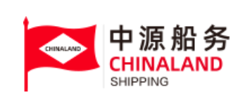
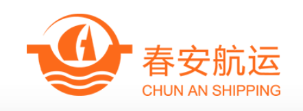
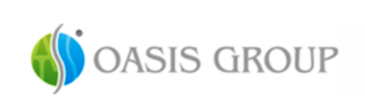
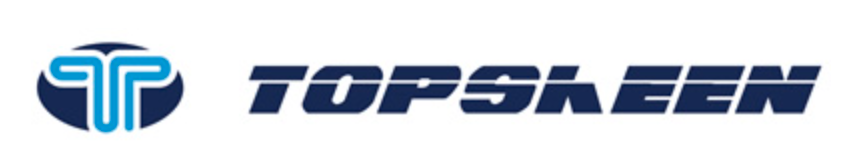

Mission
Unblock the China–Africa chain
Remove bottlenecks in the China–Africa trade supply chain, and be the long-term partner for clients expanding into the African market.
01Company profile
Akita Group is a leading maritime and engineering logistics operator in Africa, and a critical link between China and the African market. Founded in Guinea, the group today covers Sierra Leone, Ghana, Nigeria, the Republic of the Congo, Djibouti, Senegal, Côte d'Ivoire and Libya, with a regional management center in Shenzhen supporting global operations.
Akita holds licensed ship-agency qualifications in multiple African countries — vessel berthing, stevedoring, customs clearance and port coordination — with long-term port partnerships and priority berthing rights. Its in-house customs teams know each country's tax and regulatory systems, while a self-owned fleet of 100+ trucks and 50,000 m² of bonded warehouses handle complex, oversized and heavy-lift project cargo end to end.
The group works in deep partnership with major Chinese central SOEs, mining groups and shipping lines — supporting infrastructure construction, equipment export and mineral transportation across Africa, committed to integrity, efficiency and innovation as the driving force behind clients' competitiveness in the African supply chain.
02Milestones
Akita Group Guinea Company — the group takes root in Conakry, Guinea.
AKITA (GN) TRANSPORT LIMITED follows the same year — an international corporate structure paired with an owned Guinean transport arm.
SHENZHEN AKITA PACIFIC SHIPPING CO., LTD. and Hongkong Akita Pacific GH Limited follow — a regional management center in China and new entities for growth.
03Local teams
100+ employees across Africa — our own port, customs and transport teams working in Chinese, French and English, backed by the Shenzhen regional management center.

04Partners & credentials








A selection of clients and partners served by Akita Group.
05Our foundation
Mission
Remove bottlenecks in the China–Africa trade supply chain, and be the long-term partner for clients expanding into the African market.
Vision
Set new benchmarks for China–Africa logistics efficiency, and build a trusted African logistics brand.
Principles
Build long-term partnerships through integrity. Redefine the logistics experience through efficiency. Address market pain points through innovation.
Contact
Port agency, freight, project cargo or supply chain — the team replies within two hours.